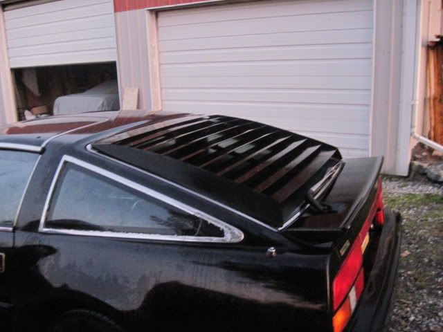

-
Anyone have pics of the MSA louvres on their car? -
Any idea why they are advertising 2 different hatch louvers? One says 84-86 aluminum, the other says 87-89 ABS with rear wiper??? All Z31's have rear wipers. I think they mean 87-89 with high 3rd brake light.Restore it, Don't crush it. They don't make them like this anymore.
Scott
85 Turbo, original owner, restored
93 NA Babied

-
87-89 has the 3rd brake light so you have these two i am pretty sure
84-86

87-89
1984 300ZX - 1988 VG30T Engine, Trans, Diff, ECU
1987 300ZX TURBO - ( Parts Car ), 1988 300ZX TURBO - ( Parts Car )
1972 240Z -- Full restore - L28ET L6 Engine from 280zx, T-5 transmission, Rear diff from the 87
1998 Mazda B-2500, And a lot of bikes -
the ones I have dont look like either of those. Mine are aluminum. -
Because you have the Chastain brand like inqui-z-tor.Greasedmonkey wrote: the ones I have dont look like either of those. Mine are aluminum.
"Let's play Battleship! There's enough Z's for that.."
My thread thingy: http://z31performance.com/showthread…ep-Zed-84Zed31 -
[quote]84Zed31 wrote:Do a google image search for Chastain Louver and quiz's car is the 3rd image, from the website of the sonOriginally posted by Greasedmonkey
of the guy who designed that style of louver. I've got them on my AE.
84 AE/Shiro #683/Shiro #820/84 Turbo -
I'm guessing the "wiper" information is provided is because back in the 80s .. there were louvers made for cars with and without wipers. The one's without wipers were lower (slightly) profile. It's just a carry over from marketing in those days.FlyingT wrote: And idea why they are advertising 2 different hatch louvers? One says 84-86 aluminum, the other says 87-89 ABS with rear wiper??? All Z31's have rear wipers. I think they mean 87-89 with high 3rd brake light.
edit: OR? Could be that when the ABS' were made .. it turned out that the final product interfered with the wipers (especially in HOT CA weather) .. so to use the ABS's .. it was advised to remove the wiper?? (Again .. this is back in the 80s .. marketing was different back then) -
[quote]inqui-Z-tor wrote:Yeah but the description is meaningless since there are wipers on all Z31s. It has to be the 3rd brake light that makes the 2 louvers different, that is the only difference between 84-86 and the 87-89 Z31 hatch.Originally posted by FlyingTRestore it, Don't crush it. They don't make them like this anymore.
Scott
85 Turbo, original owner, restored
93 NA Babied
-
[quote]FlyingT wrote: [quote=inqui-Z-tor]I'm only guessing … MSA is just (perhaps) repeating the discriptions they were given by their supplier (source) of the louvers. We're talking a 20+ year old car (albeit a Z) and I doubt they have ready access to both models to do a test fit.Originally posted by FlyingT -
Top one looks like the Interpart brand/style. Interpart had that "fin look" on the louver edges.RXGhost wrote: 87-89 has the 3rd brake light so you have these two i am pretty sure
84-86
87-89
I've seen the bottom one (style) before, it appears to be Interpart ("fin look") but I can't recall with any accuracy (LOL .. too long ago) -
Seems to me, you need a funky rice spoiler to be able to pull the look off on a 87+ car. Those smooth lines are too de-80zed to pass -
Bottom car (blue) is mine. I think they were dealer installed since there is an instruction thing about them in the glove box along with the owner manual and warranty info. Someone said (can't remember who) dealers didn't do that so who knows.
Also that spoiler was just for mock-up purposes and nothing ever came of it.
I was thinking about selling my louvers actually since I don't use them.Build thread: viewtopic.php?f=13&t=25322Originally posted by SATAN -
[quote=cdiver666]Bottom car (blue) is mine. I think they were dealer installed since there is an instruction thing about them in the glove box along with the owner manual and warranty info. Someone said (can't remember who) dealers didn't do that so who knows.
The dealer I bought my Z from did infact install louvers or had them installed November 1983. They are just like cdiver666 only an 84 without 3rd brake light :lol: . The dealer was Earl Hughes Datsun. -
Back in 1985, they were a dealer installed option.Restore it, Don't crush it. They don't make them like this anymore.
Scott
85 Turbo, original owner, restored
93 NA Babied
-
The black 86 is mine.Those are aluminum.I was going to take them off when I first purchased the car but the look kinda grew on me so I decided otherwise."If your car cant do a burnout from a 60mph rolling start, then your engine needs more work."
"Nitrous doesn't blow up motors; Idiots with nitrous blow up motors."
Shooting for 500whp


Copyright © 2006–. All rights reserved. Privacy Policy